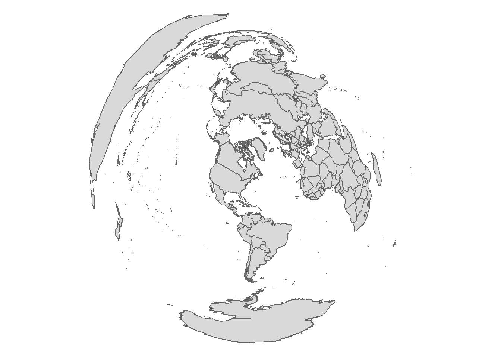
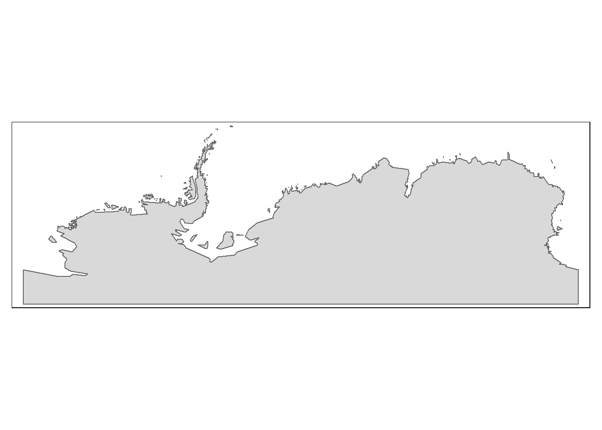
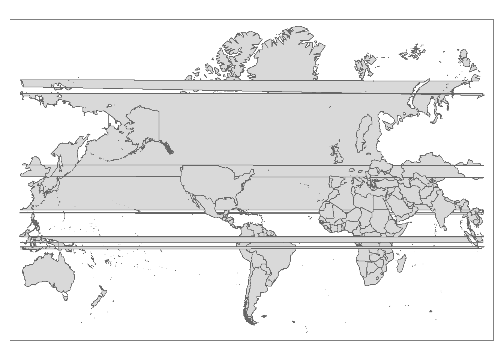

Coordinate Systems in R
For this exercise, we’ll load a sample shapefile into our current working directory (you might want to create a temporary folder for this exercise and set it as the working directory via the Session >> Set Working Directory >> Choose Directory pull-down menu from the RStudio interface).
tmp <- tempfile()
download.file("http://colby.edu/~mgimond/Spatial/Data/Income_schooling.zip",
destfile = tmp)
unzip(tmp, exdir = ".")Next, we’ll convert the shapefile into an R spatial object using readOGR (note that maptools could also be used to create an R spatial object but unlike readOGR it will not load the GIS file’s coordinate system).
library(rgdal)
s1 <- readOGR(".", "Income_schooling") # CS is read and storedOGR data source with driver: ESRI Shapefile
Source: "C:\Users\mgimond\Documents\Github\Spatial", layer: "Income_schooling"
with 16 features
It has 5 fieldsChecking for a coordinate system
The summary function can be used to pull the coordinate system information (if present) but to extract just the coordinate system information, use proj4string instead–it’s part of the sp package that was automatically loaded with the rgdal package in an earlier step.
proj4string(s1)[1] "+proj=utm +zone=19 +datum=NAD83 +units=m +no_defs +ellps=GRS80 +towgs84=0,0,0"Object s1 has a CS. It’s made up of a multi-parameter string whose syntax is briefly discussed next.
Understanding the coordinate syntax
Coordinate systems are defined in R using a syntax created by the PROJ4 project. It consists of a list of parameters, each prefixed with the + character. For example, s1’s CS is in a UTM projection (+proj=utm) for zone 19 (+zone=19) and an NAD 1983 datum (+datum=NAD83). Other bits of information that can be gleaned from the projection string are the units (in meters) and the ellipsoid (GRS80).
A list of a subset of PROJ4 parameters used in defining a CS follows. Click here for a full list of parameters.
+a Semimajor radius of the ellipsoid axis
+b Semiminor radius of the ellipsoid axis
+datum Datum name (see `proj -ld`)
+ellps Ellipsoid name (see `proj -le`)
+lat_0 Latitude of origin
+lat_1 Latitude of first standard parallel
+lat_2 Latitude of second standard parallel
+lat_ts Latitude of true scale
+lon_0 Central meridian
+over Allow longitude output outside -180 to 180 range, disables wrapping (see below)
+proj Projection name (see `proj -l`)
+south Denotes southern hemisphere UTM zone
+units meters, US survey feet, etc.
+x_0 False easting
+y_0 False northing
+zone UTM zoneAssigning a coordinate system
A CS definition can be passed to a spatial object. It can either fill a spatial object’s empty CS definition or it can overwrite and existing definition (the latter should only be executed if there is good reason to believe that the original definition is erroneous). Note that this step does not change an objects underlying coordinate system (this option will be discussed in the next section).
We’ll pretend that a CS definition was not assigned to s1 and assign one manually.
proj4string(s1) <- CRS("+proj=utm +zone=19 +ellps=GRS80 +datum=NAD83")Note that we do not need to define all of the parameters so long as we know that the default values for these unused parameters are correct. Also note that we do not need to designate a hemisphere since the NAD83 datum applies only to North America.
To recreate a CS defined in a piece of software such as ArcGIS, it is best to extract the CS’ WKID/EPSG code then use that number to lookup the PROJ4 syntax on http://spatialreference.org/ref/. For example, in ArcGIS, the WKID number can be extracted from the coordinate system properties output.

Figure 14.19: An ArcGIS dataframe coordinate system properties window. Note the WKID/EPSG code of 26919 (highlighted in red) associated with the NAD 1983 UTM Zone 19 N CS.
That number can then be entered in http://spatialreference.org/ref/’s search box to pull the Proj4 parameters (note that you must select Proj4 from the list of syntax options).
. Note that after clicking the `EPSG:269191` link, you must then select the Proj4 syntax from a list of available syntaxes to view the projection parameters](img/EPSG_search.jpg)
Figure 14.20: Example of a search result for EPSG 26919 at http://spatialreference.org/ref/. Note that after clicking the EPSG:269191 link, you must then select the Proj4 syntax from a list of available syntaxes to view the projection parameters
Here are examples of a few common projections:
| Projection | WKID | Authority | Syntax |
|---|---|---|---|
| UTM NAD 83 Zone 19N | 26919 | EPSG | +proj=utm +zone=19 +ellps=GRS80 +datum=NAD83 +units=m +no_defs |
| USA Contiguous albers equal area | 102003 | ESRI | +proj=aea +lat_1=29.5 +lat_2=45.5 +lat_0=37.5 +lon_0=-96 +x_0=0 +y_0=0 +ellps=GRS80 +datum=NAD83 +units=m +no_defs |
| Alaska albers equal area | 3338 | EPSG | +proj=aea +lat_1=55 +lat_2=65 +lat_0=50 +lon_0=-154 +x_0=0 +y_0=0 +ellps=GRS80 +datum=NAD83 +units=m +no_defs |
| World Robinson | 54030 | ESRI | +proj=robin +lon_0=0 +x_0=0 +y_0=0 +ellps=WGS84 +datum=WGS84 +units=m +no_defs |
Modifying coordinate systems
The last step showed you how to define or modify the coordinate system definition. This section shows you how to transform the coordinate values associated with the spatial object to a different coordinate system. For example, to transform s1 to a geographic (lat/long) coordinate system use the spTransform function.
s1.gcs <- spTransform(s1, CRS("+proj=longlat +datum=WGS84"))Let’s explore s1.gcs’s summary.
summary(s1.gcs)Object of class SpatialPolygonsDataFrame
Coordinates:
min max
x -71.08751 -66.96927
y 43.09105 47.45333
Is projected: FALSE
proj4string :
[+proj=longlat +datum=WGS84 +ellps=WGS84 +towgs84=0,0,0]
Data attributes:
NAME Income NoSchool NoSchoolSE
Androscoggin: 1 Min. :20015 Min. :0.002390 Min. :0.0006832
Aroostook : 1 1st Qu.:21631 1st Qu.:0.004907 1st Qu.:0.0009130
Cumberland : 1 Median :23788 Median :0.005252 Median :0.0010281
Franklin : 1 Mean :24716 Mean :0.005778 Mean :0.0011658
Hancock : 1 3rd Qu.:27897 3rd Qu.:0.006603 3rd Qu.:0.0013404
Kennebec : 1 Max. :32549 Max. :0.013387 Max. :0.0021290
(Other) :10
IncomeSE
Min. :242.4
1st Qu.:342.6
Median :455.8
Mean :458.8
3rd Qu.:551.5
Max. :724.2
Note the new coordinate system definition, but also note the new min and max extent values have changed to reflect the new CS units (degrees latitude and longitude). You’ll also note the Is projected: FALSE output that reminds us that a geographic coordinate system is a not a projected coordinate system (i.e. projected onto a cartesian coordinate system).
A geographic coordinate system is often desired when overlapping a web based mapping service such as Google, Bing or OpenStreetMap. To check that s1.gcs was properly transformed, we’ll overlay it on top of an OpenStreetMap using the leaflet package.
library(leaflet)
leaflet(s1.gcs) %>%
addPolygons() %>%
addTiles()It appears that s1.gcs was properly transformed.
Next, we’ll explore other transformations using a built in dataset of the world from the maptools package.
library(maptools)
data(wrld_simpl)
# Let's check it's current coordinate system
proj4string(wrld_simpl)[1] " +proj=longlat +ellps=WGS84 +datum=WGS84 +no_defs +towgs84=0,0,0"# Let's check its extent
wrld_simpl@bbox min max
x -180 180.00000
y -90 83.57027The following chunk transforms the worl map to an Azimuthal equidistant projection centered on latitude 0 and longitude 0.
wrld_simpl.ae <- spTransform(wrld_simpl, CRS("+proj=aeqd +lat_0=0 +lon_0=0 +x_0=0 +y_0=0 +ellps=WGS84 +datum=WGS84 +units=m +no_defs"))
library(tmap)
qtm(wrld_simpl.ae) + tm_layout(frame = FALSE) 
The following chunk transforms the worl map to an Azimuthal equidistant projection centered on Maine.
wrld_simpl.aemaine <- spTransform(wrld_simpl, CRS("+proj=aeqd +lat_0=44.5 +lon_0=-69.8 +x_0=0 +y_0=0 +ellps=WGS84 +datum=WGS84 +units=m +no_defs"))
qtm(wrld_simpl.aemaine) + tm_layout(frame = FALSE) 
The following chunk transforms the worl map to a World Robinson projection.
wrld_simpl.robin <- spTransform(wrld_simpl, CRS("+proj=robin +lon_0=0 +x_0=0 +y_0=0 +ellps=WGS84 +datum=WGS84 +units=m +no_defs"))
qtm(wrld_simpl.robin) + tm_style_natural() + tm_layout(frame = FALSE)
The following chunk transforms the worl map to a World sinusoidal projection.
wrld_simpl.sin <- spTransform(wrld_simpl, CRS("+proj=sinu +lon_0=0 +x_0=0 +y_0=0 +ellps=WGS84 +datum=WGS84 +units=m +no_defs"))
qtm(wrld_simpl.sin) + tm_layout(frame = FALSE)
Example of failed transformations
As of maptools version 0.8-39, the following projection will generate an error.
# Mercator world (54004)
wrld_simpl.mercator <- spTransform(wrld_simpl, CRS("+proj=merc +lon_0=0 +k=1 +x_0=0 +y_0=0 +ellps=WGS84 +datum=WGS84 +units=m +no_defs"))non finite transformation detected:
[,1] [,2] [,3] [,4]
Error in .spTransform_Polygon(input[[i]], to_args = to_args, from_args = from_args, :
failure in Polygons 145 Polygon 1 points
In addition: Warning message:
In .spTransform_Polygon(input[[i]], to_args = to_args, from_args = from_args, :
2 projected point(s) not finiteThe error suggests that there is a problem with (at least) one of the polygons–polygon 145. We’ll create a function that will loop through each spatial element (polygon) and attempt a transformation to confirm that polygon 145 is indeed the sole problematic polygon.
prob.poly <- function(s){
n.poly <- length(s@polygons)
crd <- "+proj=merc +lon_0=0 +k=1 +x_0=0 +y_0=0 +ellps=WGS84 +datum=WGS84 +units=m +no_defs"
for (i in 1:n.poly){
t1 <- wrld_simpl[i, ]
tryCatch(t1.merc <- spTransform(t1, CRS(crd)),
error = function(e){print(sprintf("Could not project polygon %i", i))},
warning = function(w){})
}
}Now apply the function to the wrld_simpl object.
# Run function with data
prob.poly(wrld_simpl)Polygon 145 is indeed the lone problematic shape. Let’s plot it in its native coordinate system.
qtm(wrld_simpl[145, ] )
The problematic polygon covers Antarctica. Let’s transform all polygons except polygon 145.
wrld_simpl.mercator <- spTransform(wrld_simpl[-145,], CRS("+proj=merc +lon_0=0 +k=1 +x_0=0 +y_0=0 +ellps=WGS84 +datum=WGS84 +units=m +no_defs"))
qtm(wrld_simpl.mercator) + tm_style_natural() + tm_layout(frame = FALSE)
This works, but we loose a large polygon. One possible solution is to clean the polygon’s geometry inside of R or in a GIS software such as QGIS or ArcMap. This step is not covered here but can be found via many online resources.
Another issue that can come up when transforming spatial data is when the location of the tangent line(s) or point in the CS definition forces polygon features to split across the 180° meridian. For example, re-centering the mercator projection to -69° will create the following map.
wrld_simpl.mercator <- spTransform(wrld_simpl[-145,], CRS("+proj=merc +lon_0=-69 +k=1 +x_0=0 +y_0=0 +ellps=WGS84 +datum=WGS84 +units=m +no_defs"))
qtm(wrld_simpl.mercator)
The polygons are split and R does not know how to piece them together. Unfortunately, there are no easy workarounds to this other than converting the polygon to a polyline, splitting, and then rebuilding the polygon. Another solution is to convert the vector object to a raster then reproject the raster.